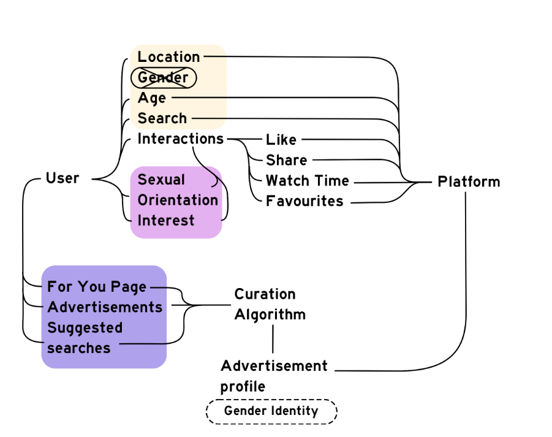

This research investigates how TikTok shapes discourse at the intersection of transgender identity and environmental narratives, examining how algorithmic systems construct, reinforce, and destabilize identity.
Overview
Method
Findings
Implications
Social media platforms like TikTok function as both spaces of visibility and sites of control. While they amplify marginalized voices, they are also driven by engagement-based algorithms that prioritize attention, conflict, and retention.
This research explores a less examined intersection: transgender identity, environmental discourse, and pollution narratives. It asks whether a platform shaped by capitalist incentives and algorithmic feedback loops can meaningfully contribute to liberation—or whether it ultimately reinforces existing systems of power.
To understand how TikTok constructs user experience, I developed a walkthrough method simulating new-user interactions with the platform.

Figure: Conceptual feedback loop between user interaction and algorithmic recommendation.
TikTok rapidly reinforces content patterns based on user interaction. Even minimal engagement leads to strong content clustering, producing highly curated identity spaces.
Content shifts between affirming and harmful narratives. Users encounter both supportive and antagonistic content within the same ecosystem, creating instability in representation.
As engagement increases, exposure narrows. The platform prioritizes familiar content, reducing diversity of perspectives and reinforcing specific identity narratives.
TikTok does not explicitly collect gender identity, yet infers it through behavior, interactions, and content consumption—effectively constructing a user identity through data.
TikTok exists as a contradictory system. It provides visibility for marginalized communities while simultaneously shaping that visibility through engagement-driven incentives.
The platform’s design encourages polarization, amplifies dominant narratives, and constrains the range of identities that are most visible. While it can act as a point of entry for awareness and connection, it ultimately operates within structures that limit its liberatory potential.
This research raises broader questions about the role of technology in shaping identity and discourse—and challenges the assumption that visibility alone equates to liberation.